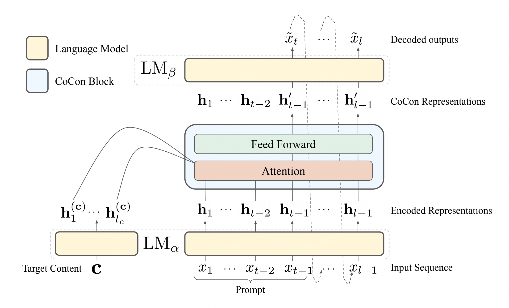
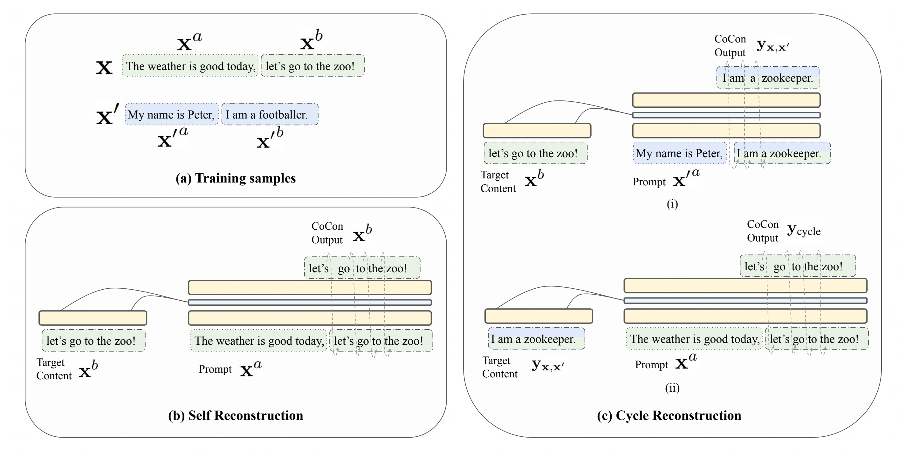
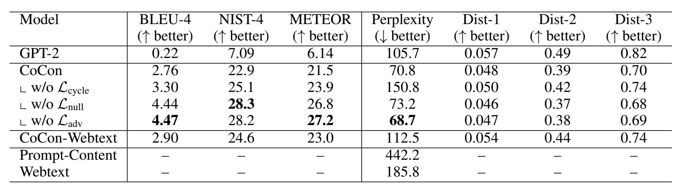
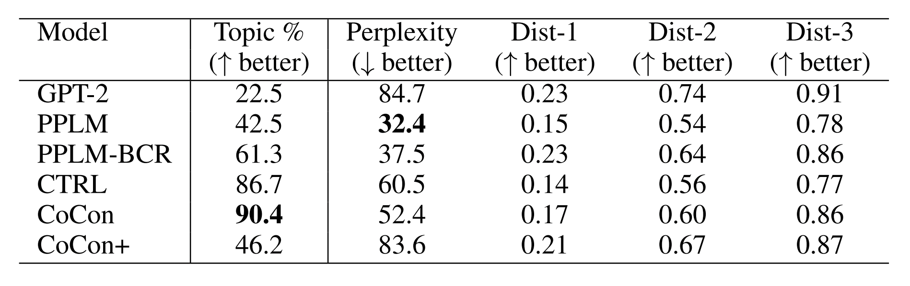
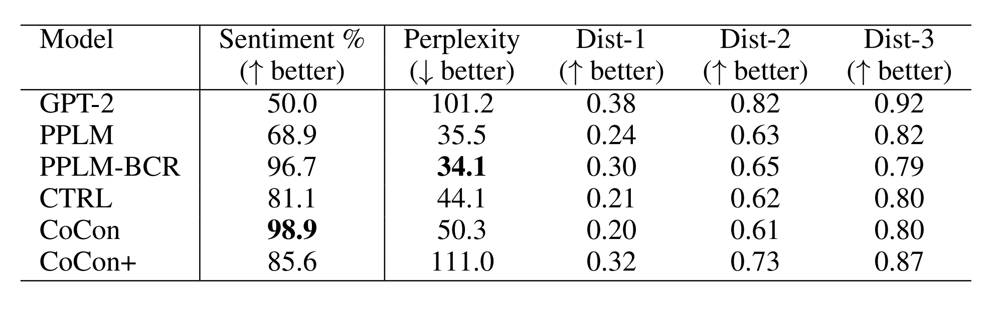

Motivation
大部分可控文本生成任务针对的是控制high-level attributes，而缺乏在content level的更加精细的控制。作者希望给定引导文本和控制文本，模型生成和引导文本保持流畅，内容上大致包含控制文本的文本，实现在字层级或者句子层级的更加细粒度的精确控制，生成可控的下文。
Framework
模型架构
提出一个Content-Conditioner (CoCon) 模型，包括预训练语言模型和一个轻量级的CoCon layer（单层Transformer block），用于融合控制文本和输入文本的信息。采用自监督的方式训练，提出多种自监督损失，在GPT2的基础上（使用GPT-2，前七层作为编码器，后17层作为解码器，且固定所有参数），训练CoCon模块。

- 使用编码器编码给定的引导文本和控制文本，分别得到对应的特征。
- 将两个特征送入CoCon模块中，通过自注意力机制进行交互，得到新的特征。
- 利用新的特征通过解码器预测下一个词。
CoCon模块
CoCon是一个单层的Transformer Block（self-attention + ffn），主要流程为：
计算引导文本的Q、K、V以及控制文本的K、V。将K、V进行拼接，然后通过自注意力。
经过position-wise feed-forward layer后与原先的中间表示连接，然后通过解码器。
如果有多个控制文本，则可以将控制文本进行拼接即可，较为方便灵活。同时可以在注意力权重矩阵上增加偏置项，来调整对于控制文本c的关注程度。
损失函数设置

由于没有现成的监督语料，所以选择无监督的方式进行，即将已有的句子分成两部分x = [p, q]。
- 自重构损失：令控制文本c = q，即生成q本身，让模型学习融入控制文本的内容。
- 无文本损失：令c = None，即让模型学习生成流畅的文本。
- 循环重构损失：让两个不同的文本互为控制文本，令x1 = [p1, q1]，x2 = [p2, q2]，进行如下操作：
- 令p2作为引导文本，q1作为控制文本，生成新文本q3。
- 令p1作为引导文本，q3作为控制文本，生成新文本q4。
- 以q1为真值来优化q4。
- 对抗损失：让生成的文本接近真实的文本。引入了对抗损失，通过最小化损失来鼓励输出文本的表示与训练样本相匹配。其中y为输出的文本，x为训练得到的文本，f_disc为判别器，判断是否是CoCon生成的文本。判别器的训练目标是最大化对抗损失。
完整的训练目标是最小化四个损失项。
Dataset
- 测试集：随机从GPT-2中采样3000个样本，均匀分为3组，每组控制文本长度为5、10、20，生成的句子长度为100。
- 训练集：从GPT-2产生的文本。同时在Webtext上做实验探究数据来源的影响。
Metrics
文本控制

主题控制

情感控制

Contribution
- 提出基于文本变量的可控文本模型CoCon，用于Content level的可控文本生成。
- 提出三种自监督的损失，用于训练CoCon模块，训练过程较为简单通用。
- 实验结果相比较PPLM和CTRL能够生成更加高质量的文本。